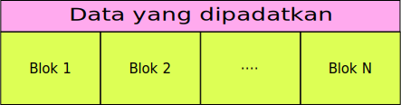

Struktur dari data yang telah dipadatkan oleh deflate
Deflate merupakan algoritma untuk memadatkan data yang sangat populer, algoritma ini digunakan dalam banyak tools dan library seperti gzip, zip archiver, konten pdf, bahkan format gambar png yang terkenal juga memakai deflate sebagai algoritma untuk memadatkan data.
Terkadang kita ingin menulis sendiri algoritma ini dalam bahasa pemrograman yang kita sukai, namun untuk melakukannya terlebih dahulu harus memahami cara bekerjanya algoritma ini. Membaca penjelasan dari artikel RFC 1951 memang salah satu cara untuk memahami algoritma ini, tetapi menurut saya, penjelasannya masih cukup membingungkan untuk orang yang pertama kali berkenalan dengan algoritma ini.
Oleh karena itu, saya mencoba menyusun artikel ini dan beberapa artikel tambahan untuk memudahkan mengenal algoritma deflate. Artikelnya disusun dari hal-hal yang paling umum sampai hal-hal yang mendetail, tidak seperti RFC 1951 yang menyusun hal umum bercampur yang detail sehingga sulit dipahami.
Diharapkan setelah membaca artikel ini beserta artikel pendukungnya, pembaca dapat mengimplementasikan sendiri algoritma ini dalam bahasa pemrograman yang disukai.
Penjelasan atas beberapa istilah yang digunakan dalam artikel ini
-
Byte
Yang dimaksud dengan byte di artikel ini adalah satu unit data yang terdiri dari delapan bit. Di dalam satu byte, bit-bit yang ada diberi nomor dari kanan ke kiri sebagai berikut: 76543210
-
Bilangan yang terdiri lebih dari satu byte
Bila ada bilangan yang terdiri lebih dari satu byte, maka byte pertama yang datang nilainya paling kecil. Contoh: untuk bilangan yang menggunakan dua byte x08 x02 (heksa) maka x08 nilainya adalah 8 sedangkan x02 nilainya 2 x 256 = 512. Maka angka x08 x02 akan bernilai 8 + 512 = 520 dalam basis desimal.
-
Menggabungkan bit-bit ke dalam satu byte
Umumnya data akan disimpan sesuai urutan bitnya yaitu dari kanan ke kiri, akan tetapi untuk Kode Huffman, data disimpan dengan posisi terbalik yaitu mulai dari bit 7 menuju bit 0, atau dari kiri ke kanan.
Struktur umum
Data yang telah dipadatkan menggunakan algoritma deflate berupa serangkaian byte yang panjangnya tak tentu. Data tersebut kemudian dibagi ke dalam blok-blok yang panjangnya juga tak tentu. Kecuali untuk blok yang tidak dipadatkan akan memiliki panjang maksimum 65535 byte. Tentu saja data tersebut minimum boleh terdiri dari satu blok saja.

Blok-blok ini tidak musti dimulai pada byte tertentu, atau berakhir pada byte tertentu. Satu blok bisa dimulai pada pertengahan byte dan berakhir pada pertengahan byte juga. Batas awal dan batas akhir untuk satu blok ada pada bit, bukan byte.
Jenis-jenis blok
-
Blok yang tidak dipadatkan
Sesuai namanya, blok ini tidak diapa-apakan, benar-benar data mentah. Panjangnya dibatasi maksimum 65535 byte. Blok ini terdiri dari header, sub header, dan body. Sub header dan body dimulai pada byte berikutnya.
-
Blok yang dipadatkan menggunakan Fixed Huffman Tree
Blok ini terdiri dari header dan body. Body dimulai pada bit berikutnya, tidak seperti blok yang tidak dipadatkan, dimana body dimulai pada byte berikut, sedangkan blok yang dipadatkan body akan dimulai pada bit berikut.

-
Blok yang dipadatkan menggunakan Dynamic Huffman Tree
Blok ini terdiri dari header, subheader, Huffman Tree HC, Huffman Tree Alpha, Huffman Tree Delta, dan body. Huffman Tree HC, Alpha, Delta dan body dimulai pada bit berikutnya. Sama seperti blok yang dipadatkan menggunakan Fixed Huffman Tree, body dimulai pada bit berikutnya, bukan byte berikutnya.
Header
Semua blok diawali dengan sebuah header. Header terdiri dari 3 bit saja.
-
bit pertama adalah BFINAL atau penanda apakah blok ini adalah blok terakhir atau bukan. Jika nilainya 0 maka ini bukan bit terakhir. Jika nilainya 1, maka ini adalah blok terakhir
-
dua bit berikutnya adalah BTYPE atau jenis blok.
- 00 : blok ini tidak dipadatkan
- 01 : blok ini dipadatkan menggunakan Fixed Huffman Tree
- 10 : blok ini dipadatkan menggunakan Dynamic Huffman Tree
- 11 : tidak dipakai, atau error
00, 01, 10, dan 11 adalah bilangan basis dua(biner) yang bila dikonversi ke basis 10(desimal) akan menjadi 0, 1, 2, dan 3
pseudo code berikut akan menjelaskan fungsi BFINAL dan BTYPE saat melakukan decoding(mencairkan data)
1 BFINAL = false 2 3 while not BFINAL: 4 BFINAL = data.bacaBit(1) #baca satu bit dari data 5 BTYPE = data.bacaBit(2) #baca dua bit dari data 6 7 case BTYPE 8 of TIDAK_DIPADATKAN: # 00 9 hasil = data.ambilSaja() 10 of DIPADATKAN_FIXED_HUFFMAN_TREE: #01 11 hasil = data.cairkanMenggunakanFixedHuffmanTree() 12 of DIPADATKAN_DYNAMIC_HUFFMAN_TREE: #10 13 hasil = data.cairkanMenggunakanDynamicHuffmanTree() 14 else: error("BTYPE ini tidak boleh ada") #11
Blok yang tidak dipadatkan
Setelah header, abaikan bit-bit berikut sampai batas byte selanjutnya. Setelah itu baca dua byte berikutnya sebagai LEN, atau panjang badan blok. Setelah itu baca lagi dua byte berikutnya sebagai NLEN, atau komplemen dari LEN.
Andaikan blok ini dimulai pada bit 0, maka byte yang berisi header akan tampak seperti ini 76543hhh. bit 3,4,5,6,7 diabaikan saja, langsung menuju byte berikutnya.
LEN adalah bilangan bulat 16 bit, byte pertama 0-255, byte kedua juga 0-255 tapi nilainya kali 256. LEN maksimum bernilai 255 + 255 * 256 = 65535.
Demikian pula dengan dengan NLEN, terdiri dari dua byte. Tetapi NLEN adalah komplemen dari LEN. Maksudnya bit bit pada NLEN adalah kebalikan dari bit-bit pada LEN. Jika LEN terdiri dari 11110000 11110000, maka NLEN adalah 00001111 00001111.
Untuk memeriksa apakah LEN adalah komplemen dari NLEN, pada kebanyakan bahasa pemrograman bisa digunakan operator or,
atau kalau dalam bahasa C bisa gunakan operator |. Operator aritmetik + juga bisa digunakan karena akan
menghasilkan nilai yang sama walaupun definisinya agak beda(kalau dalam bahasa assembly).
Jika hasil operator tersebut tidak sama dengan 0xFFFF atau 65535, maka integritas data diragukan.
1 data.majuHinggaByteBerikutnya() 2 3 # untuk mesin Big Endian dan Little Endian 4 LEN = data.bacaByte(1) + data.bacaByte(1) * 256 5 NLEN = data.bacaByte(1) + data.bacaByte(1) * 256 6 7 if LEN or NLEN != 65535: error("gawat") # baris ini sama dengan baris dibawah 8 if LEN + NLEN != 65535: error("gawat") 9 10 body = data.bacaByte(LEN) # baca data yang tidak dipadatkan sebanyak LEN byte
Jadi sebenarnya, panjang maksimum keseluruhan blok yang tidak dipadatkan tidak hanya 65535 byte, tetapi ditambah sub header sebanyak 4 byte. Kemudian ditambah 3 bit header, dan ditambah sekian bit yang diabaikan jika ada.
Body dari blok yang dipadatkan
Blok yang dipadatkan menggunakan Fixed Huffman Tree maupun yang dipadatkan menggunakan Dynamic Huffman Tree mempunyai struktur body yang sama. Body terdiri dari simbol-simbol yang saya kategorikan α, β, γ, λ, dan δ. Walaupun simbol-simbol ini tidak terdapat dalam literatur mengenai algoritma deflate, menurut saya, algoritma deflate lebih mudah dijelaskan jika digunakan kategori untuk membedakan yang mana simbol, yang mana kode huffman, dan yang mana adalah nilai harfiah.
Body dari blok yang dipadatkan akan memiliki jumlah α dan β dalam jumlah tak tentu, kemudian setiap blok akan diakhiri dengan γ yang merupakan penanda bahwa blok itu sudah berakhir. Setiap blok hanya memiliki satu simbol γ.
Contoh: ααααβααββγ
Simbol α mewakili Kode Huffman 0-255. Kode Huffman 0-255 juga mewakili nilai harfiah dari byte-byte bernilai 0-255. Bedanya Kode Huffman 0-255 dengan byte harfiah yang bernilai 0-255 adalah: satu byte selalu delapan bit panjangnya, sedangakan satu Kode Huffman bisa bervariasi panjang bit-nya, tergantung cara kita membuat/memakai Huffman Tree-nya.
Simbol γ yang merupakan penanda akhir blok mewakili Kode Huffman 256. Kode Huffman 256 tidak mewakili nilai harfiah manapun, tapi mewakili sebuah action, bahwa pembacaan blok harus diakhiri.
Simbol β mewakili pasangan pengulangan λ dan δ. satu λ selalu diikuti oleh satu δ.
Simbol λ mewakili Kode Huffman 257-285. Kode Huffman 257-285 ini mewakili banyaknya simbol α sebanyak 3-258 byte. Tetapi bagaimana kode sebanyak 28 buah(285-257 = 28) bisa mewakili rentang 3-258?
Caranya adalah: sesudah kemunculan λ gunakan tabel dibawah ini untuk menentukan extra bit yang mungkin mengikuti λ. Extra bit ini dibaca sama seperti membaca angka integer dengan urutan bit 76543210. Contoh 1110 akan bernilai 14.
| Kode Huffman | Extra Bit | Panjang |
|---|---|---|
| 257 | 0 | 3 |
| 258 | 0 | 4 |
| 259 | 0 | 5 |
| 260 | 0 | 6 |
| 261 | 0 | 7 |
| 262 | 0 | 8 |
| 263 | 0 | 9 |
| 264 | 0 | 10 |
| 265 | 1 | 11,12 |
| 266 | 1 | 13,14 |
| 267 | 1 | 15,16 |
| 268 | 1 | 17,18 |
| 269 | 2 | 19-22 |
| 270 | 2 | 23-26 |
| 271 | 2 | 27-30 |
| 272 | 2 | 31-34 |
| 273 | 3 | 35-42 |
| 274 | 3 | 43-50 |
| 275 | 3 | 51-58 |
| 276 | 3 | 59-66 |
| 277 | 4 | 67-82 |
| 278 | 4 | 83-98 |
| 279 | 4 | 99-114 |
| 280 | 4 | 115-130 |
| 281 | 5 | 131-162 |
| 282 | 5 | 163-194 |
| 283 | 5 | 195-226 |
| 284 | 5 | 227-257 |
| 285 | 0 | 258 |
Simbol berikutnya yang mengikuti λ adalah δ. Simbol ini mewakili Kode Huffman 0-31.
Akan tetapi hanya 0-29 yang dipakai. Kode 30 dan 31 tidak dipakai. Kode Huffman 0-29 ini mewakili
jarak 1-32.768. Bagaimana 0-29 bisa mewakili 1-32.768?
Kembali kita akan menggunakan extra bit dan menghitung nilainya menggunakan tabel dibawah ini.
| Kode Huffman | Extra Bit | Jarak |
|---|---|---|
| 0 | 0 | 1 |
| 1 | 0 | 2 |
| 2 | 0 | 3 |
| 3 | 0 | 4 |
| 4 | 1 | 5,6 |
| 5 | 1 | 7,8 |
| 6 | 2 | 9-12 |
| 7 | 2 | 13-16 |
| 8 | 3 | 17-24 |
| 9 | 3 | 25-32 |
| 10 | 4 | 33-48 |
| 11 | 4 | 49-64 |
| 12 | 5 | 65-96 |
| 13 | 5 | 97-128 |
| 14 | 6 | 129-192 |
| 15 | 6 | 193-256 |
| 16 | 7 | 257-384 |
| 17 | 7 | 385-512 |
| 18 | 8 | 513-768 |
| 19 | 8 | 769-1024 |
| 20 | 9 | 1025-1536 |
| 21 | 9 | 1537-2048 |
| 22 | 10 | 2049-3072 |
| 23 | 10 | 3073-4096 |
| 24 | 11 | 4097-6144 |
| 25 | 11 | 6145-8192 |
| 26 | 12 | 8193-12288 |
| 27 | 12 | 12289-16384 |
| 28 | 13 | 16385-24576 |
| 29 | 13 | 24577-32768 |
1 #the base lengths represented by codes 257-285 2 LENGTH_BASE = [3, 4, 5, 6, 7, 8, 9, 10, 3 11, 13, 15, 17, 19, 23, 27, 31, 35, 43, 51, 4 59, 67, 83, 99, 115, 131, 163, 195, 227, 258] 5 6 #the extra bits used by codes 257-285 (added to base length) 7 LENGTH_EXTRA = [0, 0, 0, 0, 0, 0, 0, 0, 8 1, 1, 1, 1, 2, 2, 2, 2, 3, 3, 3, 3, 9 4, 4, 4, 4, 5, 5, 5, 5, 0] 10 11 #the base backwards distances 12 #(the bits of distance codes appear after 13 #length codes and use their own huffman tree) 14 DISTANCE_BASE = [1, 2, 3, 4, 5, 7, 9, 15 13, 17, 25, 33, 49, 65, 97, 129, 193, 257, 385, 513, 16 769, 1025, 1537, 2049, 3073, 4097, 6145, 8193, 12289, 16385, 24577] 17 18 #the extra bits of backwards distances (added to base) 19 DISTANCE_EXTRA = [0, 0, 0, 0, 1, 1, 2, 20 2, 3, 3, 4, 4, 5, 5, 6, 6, 7, 7, 8, 21 8, 9, 9, 10, 10, 11, 11, 12, 12, 13, 13] 22 23 while true: 24 kode = data.bacaKodeHuffman(PakaiTreeAlpha) 25 if kode == 256: break #keluar dari loop 26 if kode >= 0 and kode <= 255: # nilai harfiah 27 output.tambahkanNilaiHarfiah(kode) 28 if kode >= 257 and kode <= 285: # ketemu simbol pengulangan 29 kode = kode - 257 # kurangi 257 supaya bisa digunakan sebagai index array 30 base = LENGTH_BASE[kode] 31 lambda = base + data.bacaBit(LENGTH_EXTRA[kode]) 32 33 kode = data.bacaKodeHuffman(PakaiTreeDelta) 34 # kode tidak perlu dikurangi karena bisa langsung digunakan sebagai index 35 base = DISTANCE_BASE[kode] 36 delta = base + data.bacaBit(DISTANCE_EXTRA[kode]) 37 output.tambahkanNilaiHarfiahSebanyak(lambda).padaPosisi(delta)
Baik α, γ, maupun λ di-encode atau dikodekan menggunakan Huffman Tree yang sama. Sedangankan δ dikodekan dengan Huffman Tree yang berbeda. Setiap blok yang dipadatkan akan menggunakan dua Huffman Tree yang saya sebut Huffman Tree Alpha dan Huffman Tree Delta. Untuk blok yang dipadatkan menggunakan Fixed Huffman Tree, Huffman Tree Alpha dan Delta sudah didefinisikan.
Ini Tabel untuk Huffman Tree Alpha(Fixed), kode 286 dan 287 tidak digunakan.
| Kode Huffman | Banyaknya Bit | Kode Biner |
|---|---|---|
| 0 - 143 | 8 | 00110000 s/d 10111111 |
| 144 - 255 | 9 | 110010000 s/d 111111111 |
| 256 - 279 | 7 | 0000000 s/d 0010111 |
| 280 - 287 | 8 | 11000000 s/d 11000111 |
Untuk Huffman Tree Delta(Fixed) digunakan banyaknya bit yang tetap yaitu 5. Perhatikan bahwa Kode Biner Huffman dan Biner Integer pada tabel ini kebetulan sama, untuk yang Dynamic Huffman Tree tidaklah demikian halnya.
| Kode Huffman | Banyaknya Bit | Kode Biner | Biner Integer |
|---|---|---|---|
| 0 | 5 | 00000 | 00000 |
| 1 | 5 | 00001 | 00001 |
| 2 | 5 | 00010 | 00010 |
| 3 | 5 | 00011 | 00011 |
| 4 | 5 | 00100 | 00100 |
| 5 | 5 | 00101 | 00101 |
| 6 | 5 | 00110 | 00110 |
| 7 | 5 | 00111 | 00111 |
| 8 | 5 | 01000 | 01000 |
| 9 | 5 | 01001 | 01001 |
| 10 | 5 | 01010 | 01010 |
| 11 | 5 | 01011 | 01011 |
| 12 | 5 | 01100 | 01100 |
| 13 | 5 | 01101 | 01101 |
| 14 | 5 | 01110 | 01110 |
| 15 | 5 | 01111 | 01111 |
| 16 | 5 | 10000 | 10000 |
| 17 | 5 | 10001 | 10001 |
| 18 | 5 | 10010 | 10010 |
| 19 | 5 | 10011 | 10011 |
| 20 | 5 | 10100 | 10100 |
| 21 | 5 | 10101 | 10101 |
| 22 | 5 | 10110 | 10110 |
| 23 | 5 | 10111 | 10111 |
| 24 | 5 | 11000 | 11000 |
| 25 | 5 | 11001 | 11001 |
| 26 | 5 | 11010 | 11010 |
| 27 | 5 | 11011 | 11011 |
| 28 | 5 | 11100 | 11100 |
| 29 | 5 | 11101 | 11101 |
| 30 | 5 | 11110 | 11110 |
| 31 | 5 | 11111 | 11111 |
Pada blok yang dipadatkan menggunakan Fixed Huffman Tree, kedua Huffman Tree yang digunakan yaitu Huffman Tree Alpha dan Delta tidak perlu disertakan dalam blok. Sedangkan untuk blok yang dipadatkan menggunakan Dynamic Huffman Tree, Huffman Tree Alpha dan Delta perlu disertakan pada blok.
Pada blok yang dipadatkan menggunakan Dynamic Huffman Tree, Huffman Tree Alpha dan Delta disimpan dalam bentuk yang sudah dipadatkan. Dan Huffman Tree yang digunakan untuk memadatkan kedua Tree tersabut adalah Huffman Tree HC. Memang agak memusingkan.
Huffman Tree Alpha dan Delta yang dipadatkan menggunakan Huffman Tree HC akan berisi Kode Huffman yang berbeda dengan penjelasan sebelumnya. Kali ini Kode Huffman-nya dibagi dalam empat kategori, yaitu:
- 0-15 mewakili nilai panjang kode biner 0-15
- 16 mewakili perintah salin kode sebelumnya sebanyak 3-6 kali, menggunakan bantuan extra 2 bit (00 = 3, 01 = 4, 10 = 5, 11 = 6).
- 17 mewakili perintah ulangi menulis nilai 0(zero) sebanyak 3-10 kali dengan bantuan extra 3 bit.
- 18 mewakili perintah ulangi menulis nilai 0(zero) sebanyak 11-138 kali dengan bantuan extra 7 bit.
Bukankah Hufman Tree Alpha dan Delta yang dipadatkan menggunakan kode 0-287 dan 0-31, kenapa nilai Huffman Tree HC yang dipakai cuma 0-15, ternyata yang disimpan bukan nilai 0-287(butuh 9 bit) atau 0-31(butuh 5 bit), melainkan panjang kodenya dalam biner. Contohnya untuk tabel Huffman Tree Alpha(Fixed) panjang kode binernya adalah 7-9 bit, sedangkan untuk yang Dynamic, panjang kode binernya bervariasi antara 0-15 bit. Panjang 0-15 bit inilah yang jadi nilai harfiah untuk Huffman Tree HC. Dengan menggunakan panjang kode biner ini sudah cukup untuk merekonstruksi Huffman Tree.
Huffman Tree HC juga cuma disimpan panjang kode binernya, jadi hanya mengkonsumsi 3 bit(menghasilkan panjang 0-7 bit), tidak perlu 5 bit untuk menghasilkan Kode Huffman 0-18.
Hanya saja celakanya, panjang kode biner ini tidak disimpan secara berurutan, melainkan disimpan dengan urutan sebagai berikut: 16, 17, 18, 0, 8, 7, 9, 6, 10, 5, 11, 4, 12, 3, 13, 2, 14, 1, 15. Kalau panjangnya 0 bit, berarti nilai tersebut tidak digunakan.
Setelah panjang tiap kode sudah dibaca, Huffman Tree bisa direkonstruksi menggunakan cara di artikel Algoritma Huffman
Untuk penjelasan mengenai pasangan λ dan δ silakan baca artikel Algoritma LZ77
Format data dari blok yang dipadatkan dengan Dynamic Huffman Tree
OK, sekarang kita akan bahas secara mendetail format data dari blok yang dipadatkan dengan Dynamic Huffman Tree. Ini merupakan blok yang paling rumit dan membingungkan, sekaligus paling umum dijumpai dalam kehidupan sehari-hari.
Blok ini, setelah header tiga bit, kita akan menjumpai
- 5 bit HLIT
- 5 bit HDIST
- 4 BIT HCLEN
-
Huffman Tree HC yang terdiri dari HCLEN dikali 3 bit. Ingat Huffman Tree HC disusun berdasarkan urutan 16, 17, 18, 0, 8, 7, 9, 6, 10, 5, 11, 4, 12, 3, 13, 2, 14, 1, 15.
- Huffman Tree Alpha sebanyak HLIT yang sudah dipadatkan.
- Huffman Tree Delta sebanyak HDIST yang sudah dipadatkan.
- Body yang sudah dipadatkan.
- Simbol γ atau Kode Huffman 256 sebagai akhir blok.
HLIT seharusnya berisi nilai antara 0-285. Tetapi itu membutuhkan 9 bit. Maka untuk menghemat tempat digunakan hanya 5 bit sehingga nilai HLIT yang disimpan dikurangi 257 terlebih dahulu baru disimpan. HLIT yang dikurangi 257 akan bernilai 0-31 dan cukup menggunakan 5 bit. Jadi spesifikasi deflate memaksa kita menggunakan Kode Huffman minimal sebanyak 258(0-257), maksimal 288(0-287).
HDIST juga demikian, harusnya bernilai 1-32 tapi dikurangi 1 baru disimpan sehingga muat dalam 5 bit.
HCLEN harusnya berisi 0-18, tapi untuk menghemat 1 bit, digunakan 4 bit saja setelah HCLEN dikurangi 4. Jadi spesifikasi deflate memaksa kita menggunakan minimal 5(0-4) dan maksimal 19(0-18) Kode Huffman untuk Tree HC.
1 HC_ORDER = [16, 17, 18, 0, 8, 7, 9, 6, 10, 5, 11, 4, 12, 3, 13, 2, 14, 1, 15] 2 3 HLIT = data.bacaBit(5) + 257 4 HDIST = data.bacaBit(5) + 1 5 HCLEN = data.bacaBit(4) + 4 6 7 for i in 0..HCLEN: 8 TreeHC_len[HC_ORDER[i]] = data.bacaBit(3) 9 10 #kita abaikan rekonstruksi TreeHC untuk penyederhanaan 11 12 for i in 0..HLIT: 13 TreeAlpha_len[i] = data.bacaKodeHuffman(PakaiTreeHC) 14 15 for i in 0..HDIST: 16 TreeDelta_len[i] = data.bacaKodeHuffman(PakaiTreeHC) 17 18 #kita abaikan rekonstruksi TreeAlpha dan TreeDelta
Setelah itu baca body pakai TreeAlpha dan TreeDelta sampai ketemu kode 256(γ). Caranya sama seperti membaca body yang dipadatkan dengan Fixed Huffman Tree, hanya saja TreeAlpha dan TreeDelta direkonstruksi dari blok data, bukan dari tabel yang Fixed.